01 · 大池子抢筹
看这一章 →
不错过 $BOME / $TRUMP 的超级大池子原则
池子要超级无敌大，大到足以容纳各方做市商进场，也方便各大交易所下场抢筹码。
大级别造富币绝不是几万刀小池子的自嗨，深厚的初始流动性与交易所自费买币上所的配合才是主升浪核心。
- 盯紧初始池子极深、能容纳大资金进出的现象级新币
- 分清项目方付费上所与交易所自费买筹码上所
- 对大池子破圈概念敢在早期确认后顺势跟进
一级链上 Meme 与二级蓝筹双栖实战派，写下《如何在一级市场淘金》《50U 起步存活指南》与多篇百倍币全程复盘。完整收录 781 篇 X 本人原创推文（按 6 大板块、16 个自然小节排好，原汁原味）与 112 张本地配图；底部同步收录 1 篇深度长文（共 1,774 字）。
池子要超级无敌大，大到足以容纳各方做市商进场，也方便各大交易所下场抢筹码。
大级别造富币绝不是几万刀小池子的自嗨，深厚的初始流动性与交易所自费买币上所的配合才是主升浪核心。
10k–500k 赚社区传播的钱，500k–3M 赚 KOL 接力的钱，3M–10M 赚游资短线的钱。
每个市值台阶的买盘来源完全不同，搞清当前处在哪个接力环节，才知道该上车、持有还是兑现。
不管卖飞、亏钱还是赚钱，都要从 K 线、叙事、庄地址、推特热度与对标市值五个维度完整复盘。
交易不是靠玄学天赋，而是靠一次次把历史牛币的启动前兆与市值锚点刻进脑子。
本金越少越要减少无脑 PVP 试错；先学会出本活下来，再把确定性行情用双币轮动滚起来。
小资金最大的敌人是频繁手续费磨损和追高归零，只有克制出手频率、做好阶梯止盈才能完成原始积累。
上轮牛市积累经验，本轮熊市积累本金，下轮牛市积累财富；每天农 U 留 70% 等三四个月一次的极限恐慌。
流动性干涸时盲目以大博大只会持续失血，稳稳积攒稳定币筹码，等恐慌砸盘时抄底核心资产才是正道。
你自身就是最大 Alpha；平时靠两三台手机盯推特、电报和 Reddit 一样能跑赢多数盲目跟单者。
工具永远只是辅助，持续观察链上资金行为、保持冷静不被噪音裹挟，才是穿越牛熊的真壁垒。
从最基础的合约检测与防骗讲起，完整梳理 50U 小资金如何在鱼龙混杂的一级市场避开归零陷阱、先站稳脚跟再逐步放大。
不是大科也没有自研 bot 怎么玩一级？magnolia 公开自己出门带两三台手机、靠推特、电报和 Reddit 纯人工逮聪明地址与早盘线索的实操流程。
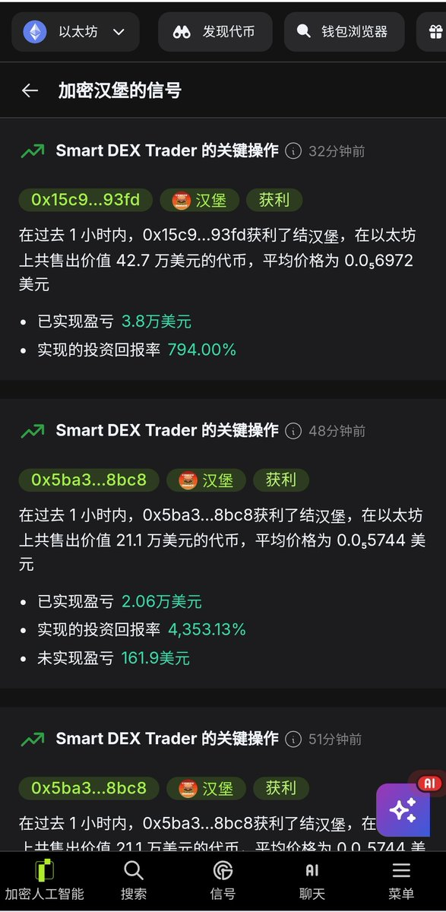
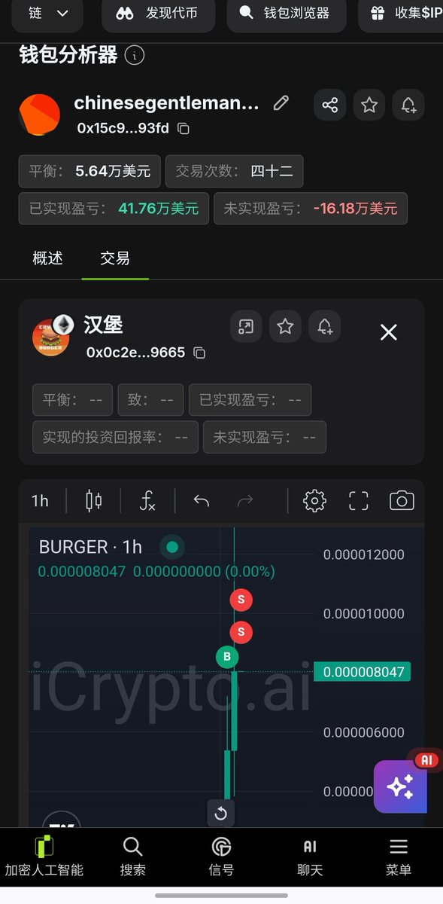
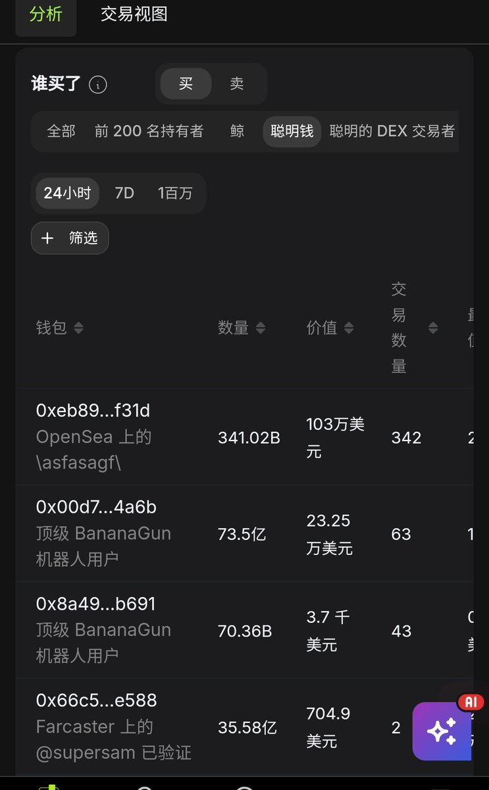
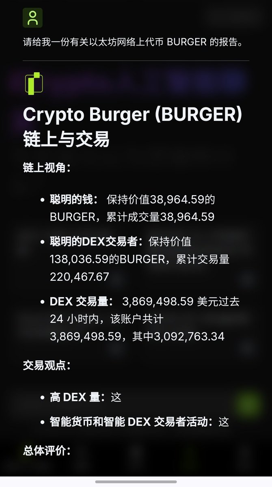
拆解熊市一级从内盘扫链、小群合力射出、外盘狙击吃迁移流动性到 KOL 接力的完整链路，并区分 BSC 日结与 SOL 二段的不同节奏。
同样是动物园 Meme，为什么有的止步几百万，有的能冲上十亿？核心在于是否有清晰命名、持续破圈的真实物料以及跨越 Web2 圈层的粉丝共识。
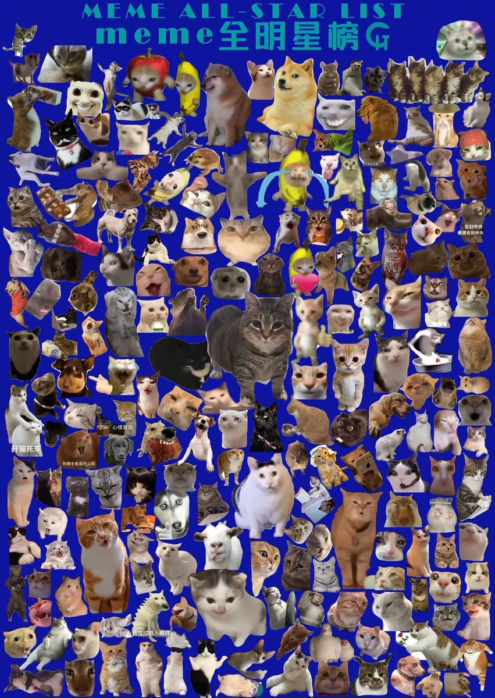
无论卖飞还是赚钱，每个币都要从 K 线、叙事、链上庄地址、推特热度和对标市值五个维度完整复盘，把偶然运气沉淀成下次能复用的肌肉记忆。

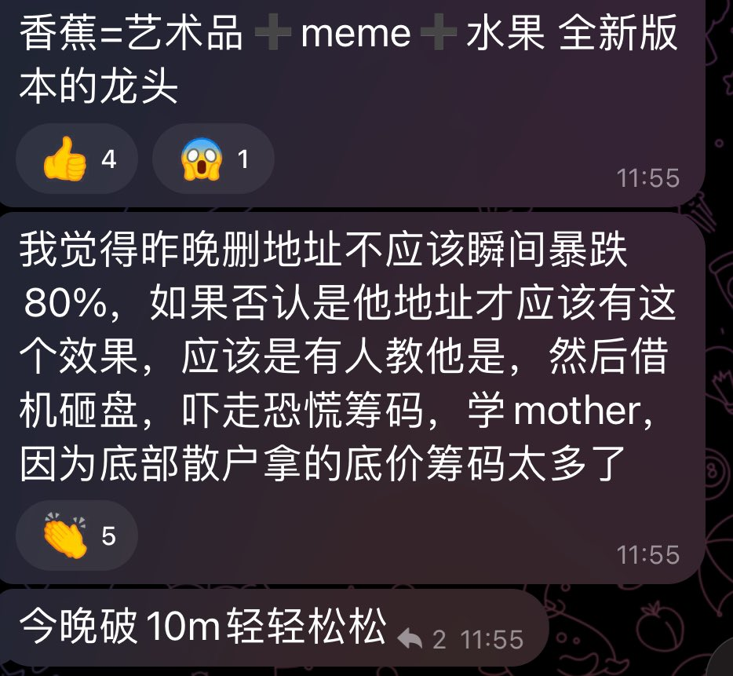
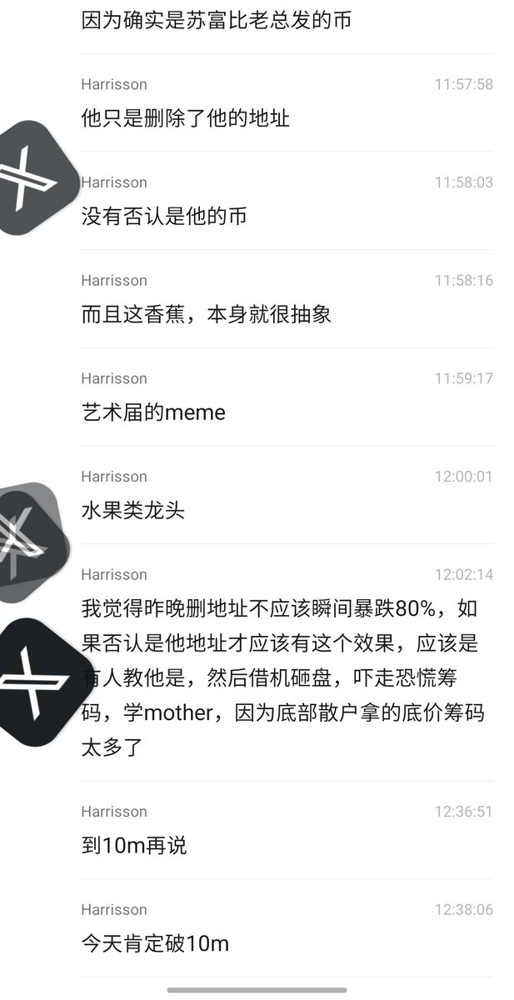
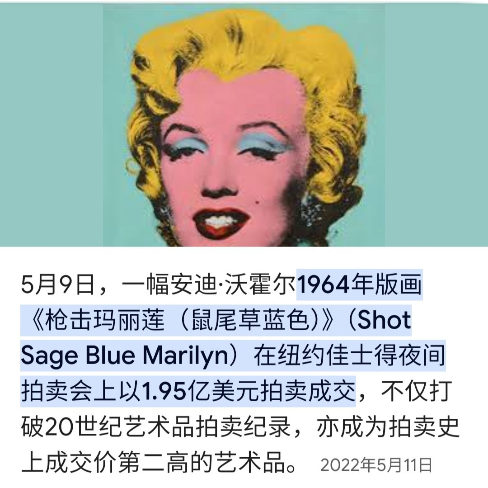
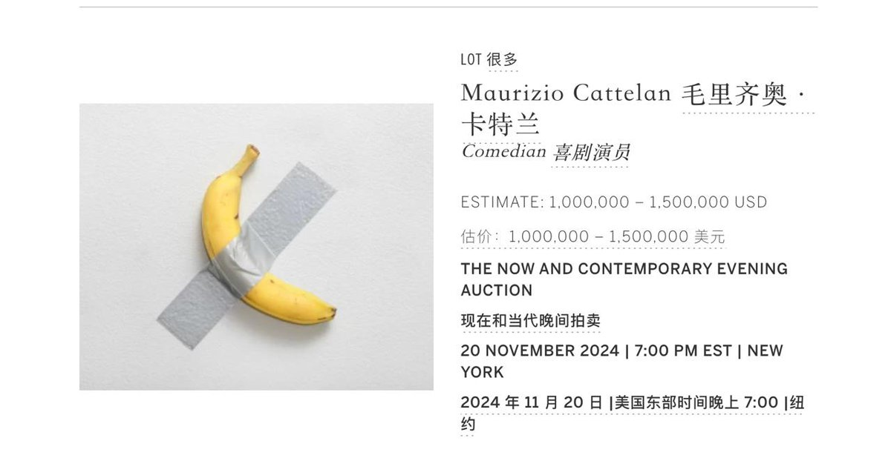
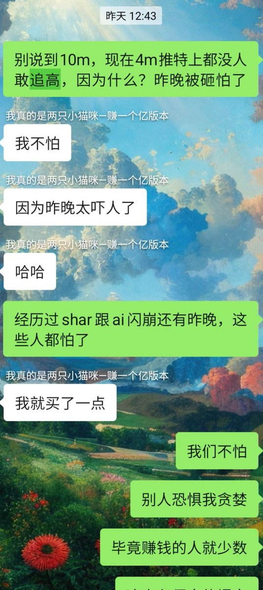
很多踏空不是反应慢，而是困在中文二手信息茧房里。学会直接去英文社区评论互动与检索一手源头，才能在 Moodeng 这类海外热点爆发初期就看懂。
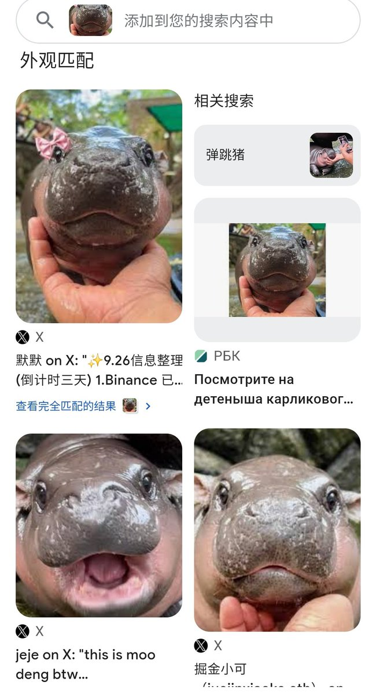
进场前先问一句“这一段我赚的是谁的钱”：10k–500k、500k–3M、3M–10M 每个区间进来的资金性质截然不同，搞混周期就会替上一波买单。
下次再遇到 $BOME、$TRUMP 这种级别的机会怎么一眼认出？第一看池子够不够大以容纳各方做市商；第二分清项目方交钱上所与交易所自费买币上所的强庄差异。
盯紧新币 5/10/15 分钟线突发放量与前排大户持仓变化：在震荡中抬高全员成本、洗掉不坚定筹码，同时切忌把一级满仓思维照搬到二级分仓市场。
本金越少越要克制乱冲 PVP 的冲动。小资金翻倍靠的不是每天买十个土狗，而是买在赔率极佳的点位、先出本守安全线，再拿利润顺势滚仓。
分享高胜率多币轮动节奏：先吃龙头二浪再降仓切新板块一浪，同步埋伏日线横盘放量标的，在龙头 4 小时急插针时完成利润接力。
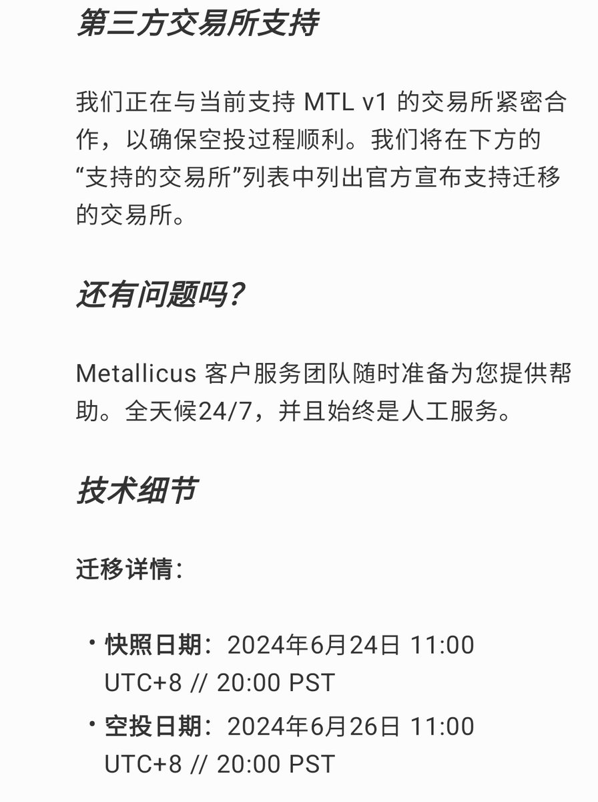
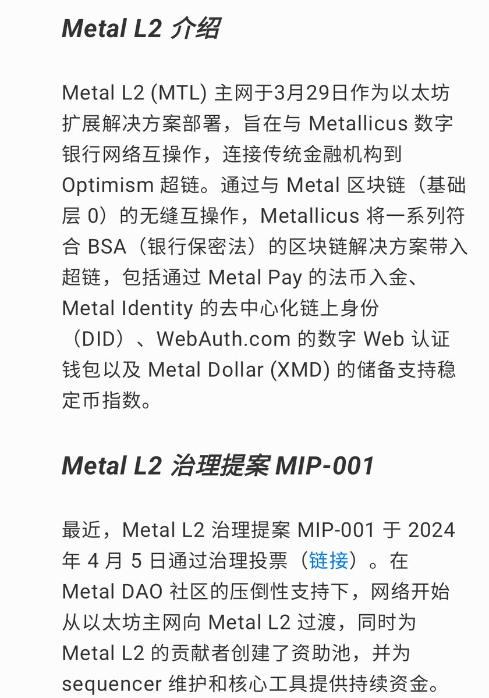
“只有快要达到顶峰时，天赋才会出来看你一眼。”戒掉每天刷新盈利榜带来的焦虑，踏踏实实做完每一笔复盘，你自己的认知进化才是最大的 Alpha。
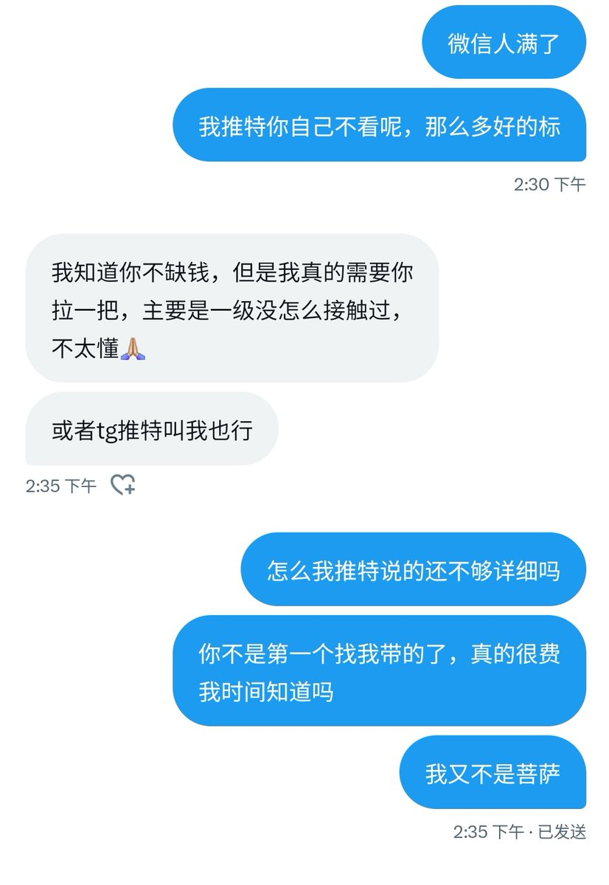
熊市和真空期最忌讳以大博大。每天稳稳农几十上百 U，把其中 70% 锁进不动钱包，耐住三四个月寂寞，只为等那个全面恐慌时刻一口气抄底。
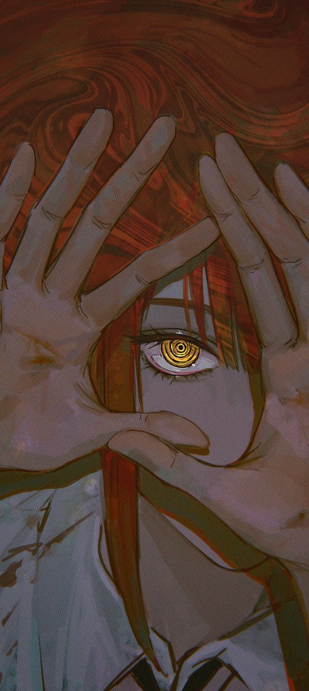
总结主流蓝筹在全面恐慌时的低吸锚点，并拆解交易所 Alpha 妖币上线破发、拉一个月断头一次、等空头爆完再轮动切换的收割节奏。
收录 magnolia 亲测整理的本地显卡挖矿分步实操教程与链上工具指南。
独立归档 magnolia 颇受欢迎的生活吐槽、趣味段子、跨文化热梗与日常推友对话，保持前面交易方法论板块的纯粹高密度。